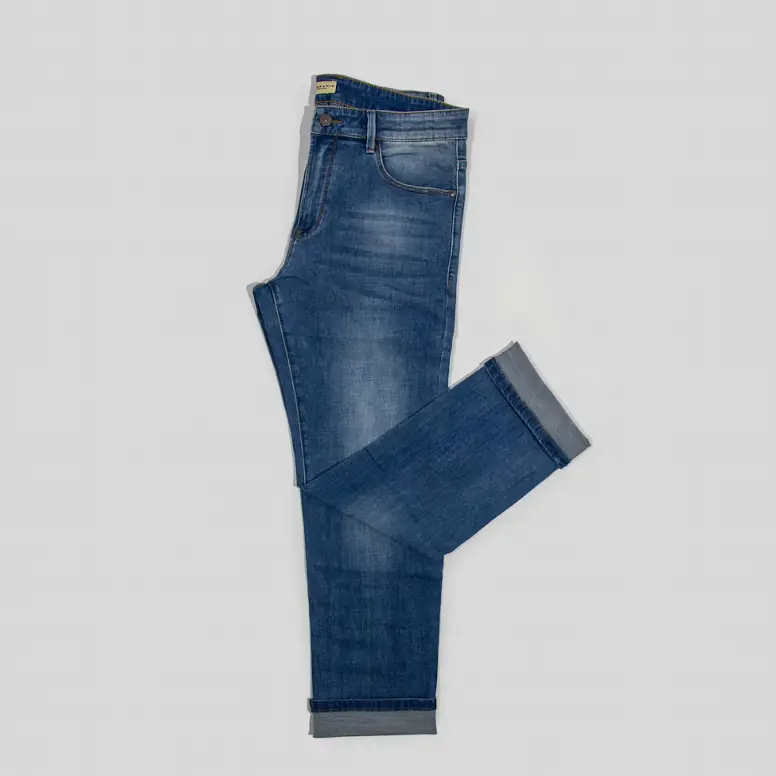
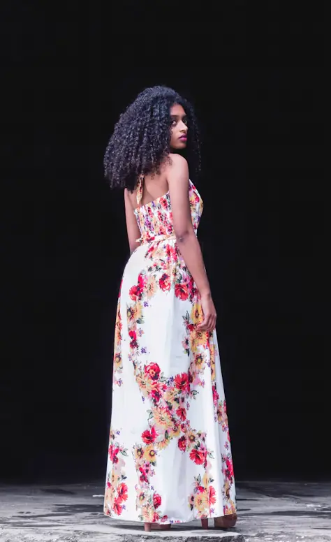
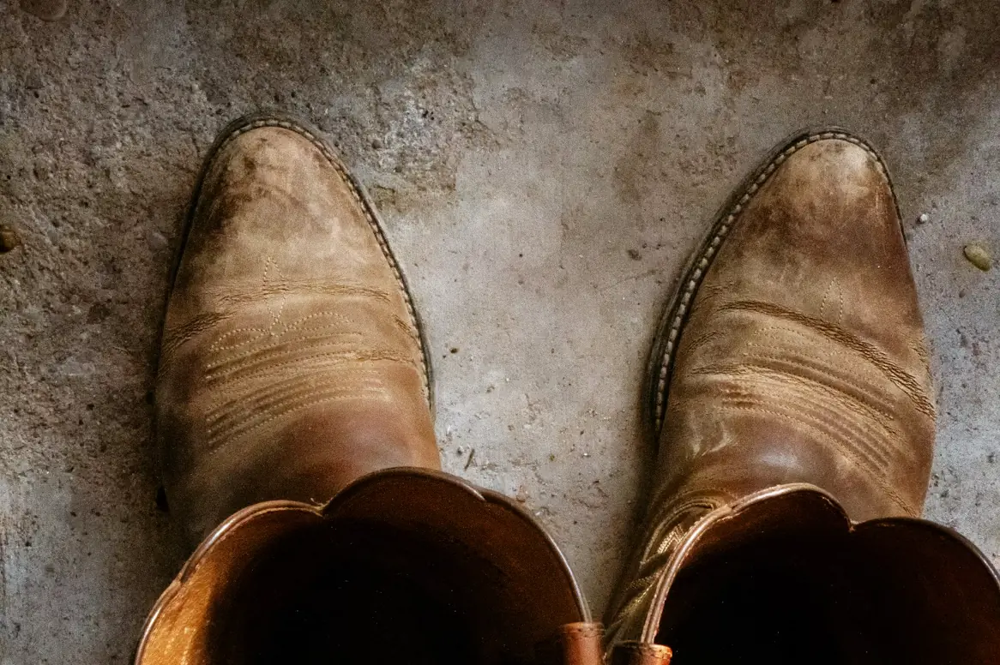
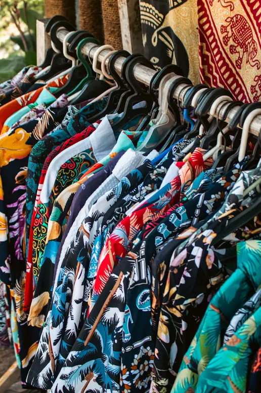
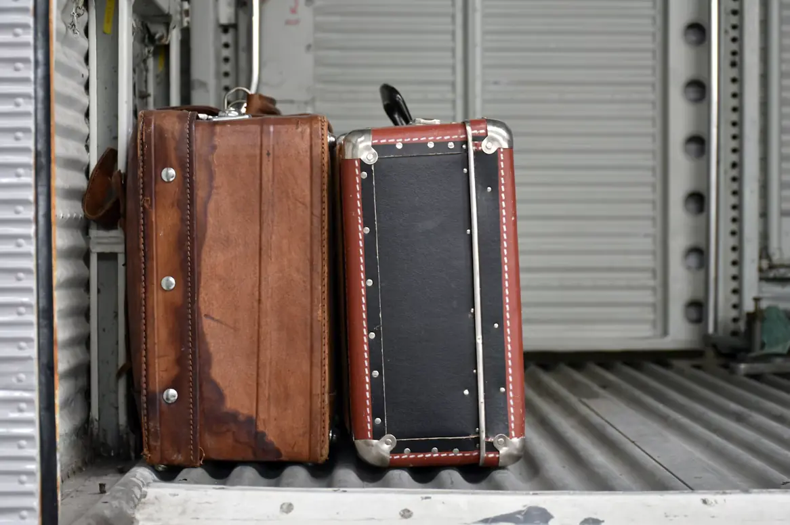
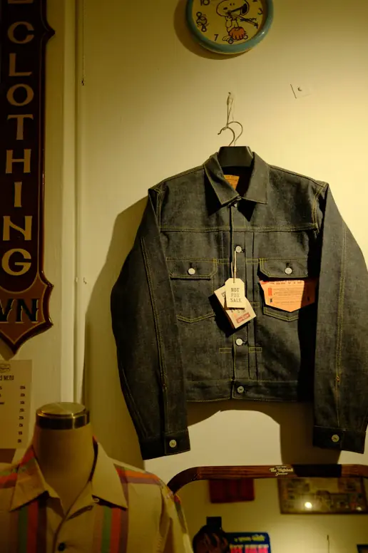
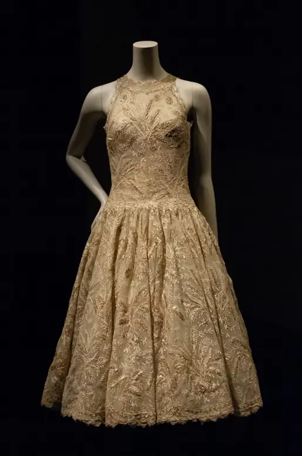
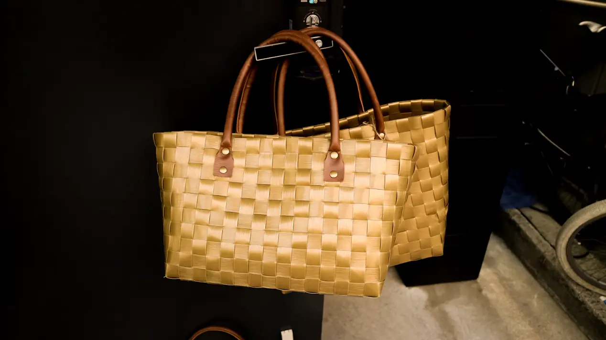

Single-stitch tour tee
- Era
- ’80s
- Size
- L
- Condition
- Excellent
- Price
- $38
Faded black, cracked front print, 22 in. pit to pit.
Hold it for 24 hoursFresh rack · Tagged Tuesday, 11 AM
A sample of this week's drop. Everything is one of one, measured, and tagged by era and size. See something? Hit hold and we'll keep it behind the counter for a day.
Faded black, cracked front print, 22 in. pit to pit.
Hold it for 24 hours
Medium stone wash, cuffed hem, 100% cotton with no stretch.
Hold it for 24 hours
Cotton voile, red rose print, ties at the back.
Hold it for 24 hours
Hand-stitched shafts, stacked heel, new soles this fall.
Hold it for 24 hours
Boxy fit, coconut buttons, a whole rack to pick from.
Hold it for 24 hoursHeavy denim, high rise, big flare.
Hold it for 24 hoursBias cut, adjustable straps, hits mid-calf.
Hold it for 24 hours
Brown and black with red trim, sold as a pair, all latches work.
Hold it for 24 hoursCream wool cable knit, tidy darn at one cuff.
Hold it for 24 hours
Rigid dark rinse, copper buttons, original tags still on.
Hold it for 24 hours
Champagne lace with gold embroidery, full skirt, side zip.
Hold it for 24 hours
Leather handles, holds a whole Sunday haul.
Hold it for 24 hoursOnline is a preview, not a store. Prices are what you pay at the register, tax added. The full drop is about ten times this, so come in.
How we tag
Every hang tag shows the era, the price and a modern size. Vintage sizing runs small, so we also write the real measurements on the back: pit to pit and length for tops, waist and inseam laid flat for bottoms.
| Grade | What it means |
|---|---|
| Like new | Barely worn or deadstock. Sometimes the original tags are still on. |
| Excellent | Worn and loved, with no flaws you'd notice from arm's length. |
| Good | A small, honest flaw that we name on the tag: a mend, a fade, a resole. |
| Loved | Real character and a lower price. Perfect for the $5 to $15 rail by the door. |
Get the drop list Monday night, a day before it hits the floor.